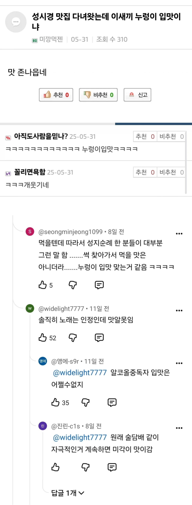

https://bbs.ruliweb.com/best/board/300143/read/76758756

https://bbs.ruliweb.com/best/board/300143/read/76758756

연예인 추천 맛집 절대 안감ㅋㅋ
내가 같은 맛집 메뉴를 성시경 왔다가기 전후로 먹어봐서 앎
성시경이 들쑤셔서 사람 미어터지니까 퀄리티가 떨어질 수 밖에 없더라고
맞아. 인기가 많아지면 음식퀄이 예전만큼 안나오는 경우가 대부분이더라구. 그래서 자주 가던 맛집 유명해지면 아쉬워 하는 사람 마음도 잘 이해가 가더라. 예전에는 좀 극성이네 싶었는데
술좋아하는 사람이 맛있다고하는거는
맛을 음미하는게 아니라 안주로서 소비해야함.
이거 ㄹㅇ 나도 소주 마시는 이유가 안주 맛있게 먹기 위해서임
쯔양 좋아하고 자주봐서 맛있다는거 몇개 시켜먹어봤는데 누렁~ 그래도 쯔양 좋아하긴함
https://m.dcinside.com/board/neostock/5530340
쯔양의혹 모음집
한번 더 깜빵보내줄까
그냥 재앙 몰고오는 누렁이 느낌임
그냥 저냥 가던 가게 다 웨이팅 생기게 하고
대전출신으로서 대전 태화장 맛있다고 백종원이랑 같이 갔던 게 ㄹㅇ 이해가 안가더라
태화장 맛있던 건 한 20년 전 이야기인데
그럼 중국집 어디가야함?
대전/공주/논산은 중국집 맛있는 곳 자체가 거의 없음
굳이 대전 구도심에서 찾으라면 희락반점 봉봉원 그 정도?
신도심 포함하면 린린이 대전 원탑
린린은 양식 팔 것처럼 세련되게 생겼네
명실상부 대전 원탑임 돈 안아까움
그렇게 말하니 꼭 가봐야겠구만
https://www.youtube.com/watch?v=OUPLLG-xjDQ
보고 가는 거 추천 ㅋㅋ
랑만일때 한번 가봤는데 음식 맛은 그럭저럭 나쁘지 않았는데 그가격이면 그맛 나와야된다고 생각했었음
애 한명 어른둘 이렇게 갔었는데 한 7만원 나온거같은데...
그 가격인데 그 맛 안나오는 집이 너무 많아서 ㅋㅋㅋ
사람들이 생각하는 일반적인 중국집이면 도마동 홍운장(여기 안가본지 꽤 됐네)이나 갈마동 학짬뽕 대덕구청 오짬뽕 전민동 성화짬뽕 노은 칼질만번짬뽕 오정동 화도식 체인은 조기종의 향미각 뭐 이런 곳이 생각은 나는데 딱히 맛집이다! 누구 데리고 가야지! 라고까지 생각해본 적은 한 번도 없음
중간 가격대에 적당한 세련됨이면 복수동 늘봄 이런데도 괜찮았던 걸로 기억하고 술하고 같이 먹을 거면 중리동 심초 탕수육은 다해원 무한리필은 연포짬뽕(여긴 맛집도 아니고 그냥 가성비 올인) 다 알긴 아는데 솔직히 대전에서나 맛집취급받지 군산가면 바로 폐업각 날카로움
조금만 차타고 가면 익산군산 쪽이 중식 세가 워낙 강하다보니 대전 자체가 중식이 좀 약한 듯도 함
청주도 대전보다는 중식 맛있는 집 많은 듯 하고
대전은 칼국수지
린린은 둘이가서 짬뽕하나 유린기하나시키면 짬뽕 반반 나눠주는 서비스가 참 좋음
단가 비싼 중국집은 그렇게 안해주면 손님들한테 욕먹움 ㅋㅋㅋ
많이 외곽지역이긴 한데 가수원동에 서해반점이라고 있음
진짜 밥알 하나하나 볶아진 옛날식 제대로된 볶음밥 먹을 수 있는곳
솔직히 서해반점도 그냥 평타임
거기 케찹탕수육도 옛날 추억으로 먹는 거지 맛은 그냥 그래
아니 ㅋㅋㅋㅋ 주요 콘티가 맛집 소개인데, 대중적인 맛이라고 한 적 없는데? 하는 건 말장난 아니냐?
풍기 굴다리반점 짜장면 또 먹고 싶다 언제 가지..
ㅇㄱㄹㅇ 우리 동네에도 왔다간데 있는데 좀 그래 ㅋㅋㅋ
완전 아저씨 입맛
누렁이 입맛 맞는 것 같음 ㅋㅋ
이게 대부분이 장사 어느정도 되던 가게가 방송이후 갑자기 손님 몰리면서
퀄리티 점점 떨어져가는 시점에 사람들이 야 여기 별거없던데? 하는경우도 되게 많긴함
난 잘가던집들 성시경이 들쑤시고 다닌게 많아서 .. 근데 내가 입맛이 평소에 슴슴한맛, 미원 덜 들어간맛, 깔끔한맛 좋아한다는 평 듣긴함 안좋게 표현하면 이맛도 저맛도 아닌 맛 좋아한다고 들음
ㅋㅋㅋㅋㅋ 경험담들이 진짜 많네 ㅋㅋㅋ
나도 양주 부찌집 성시경 방문 플래카드 잇길래 먹어봤는데 좀 밍밍하고 별로긴 하더라
소신발언 하나한다
서울촌놈들 입맛 호들갑 너무 믿지마라
이거 진짜인게 평생 서울에서 살다가 지방 잠깐 내려갔다왔는데 다 맛있음;; 근데 다시 서울 오니까 이딴걸 줄서서 비싸게 사먹나 개빡치더라
보통은
맛집 -> 유명인에 의해 소문이 탄다 -> 손님이 몇배로 는다 -> 식당의 캐파가 감당이 안된다 -> 음식 퀄리티 저하
이런거 아냐?
대부분 사람들의 입맛은 무난하고 무던함
미식을 좋아하고 맛집 찾아다니는 사람들은 존나 까다로움
성시경 맛집은 특히나 이상하더라
내가 믿는 건 최자로드
최자로드는 실패한 적이 없는 것 같은데
반대로 내가 다니던 곳 쑤신 곳이 있러서 몇군데 뺏김....쒸이익...
술 좋아하는 사람은 99% 맛알못임
취했을땐 암거나 맛있고 깨면 숙취 때문에 맛을 못느낌
중국대사관 앞 짱1깨집 개실망함
맛은 취향을 많이 타니깐 큰 기대하면 안 됨
난 이영자 맛집들 보면 맛있는곳들도 있긴한데 그냥 평범한 곳들도 많더라 그냥 표현력때문에 평범한것도 맛있는것처럼 포장되는듯
영상 보고 연남동에 양꼬치집 갔는데 진짜 드럽게 맛 없더라
대충 먹고
그 앞에 고기집 가서 맛나게 먹음